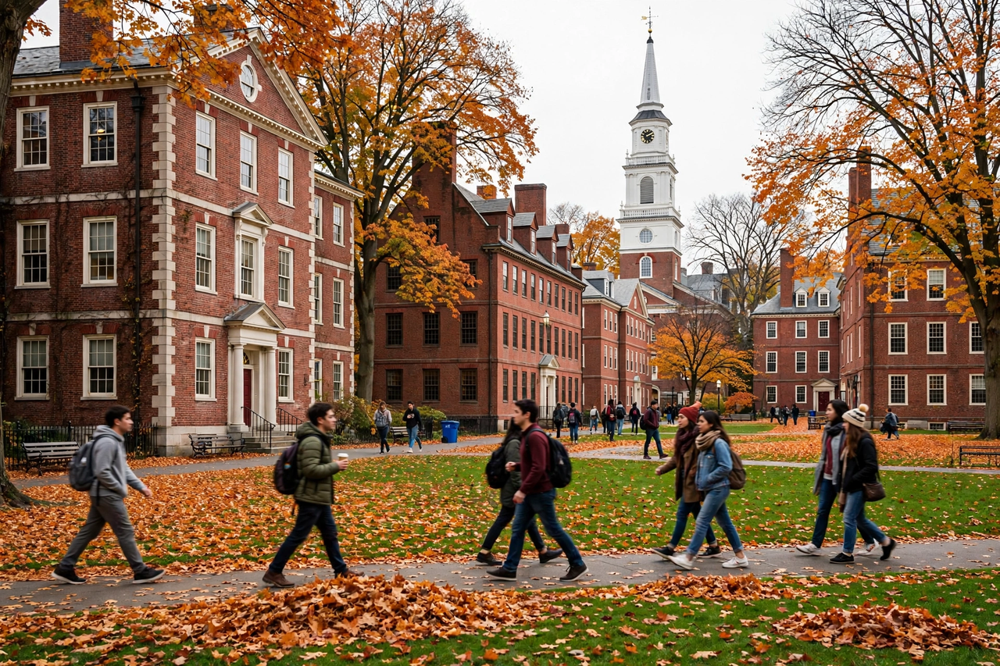

Homepage in Harvard's style, with representative feature stories. Founded in 1636, Harvard is the oldest institution of higher education in the United States.

Harvard Yard in autumn — red-brick buildings, the John Harvard statue and fallen leaves
Twelve degree-granting schools, from Harvard College to the graduate and professional schools.
From medicine and public health to the humanities — inquiry across every field.
The largest academic library system in the world and museums open to the public.